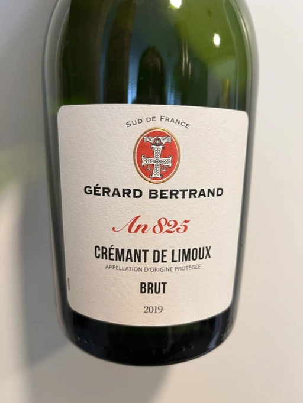

- Type
- White Sparkling, Brut
- Producer
- Gérard Bertrand
- Vintage
- 2019
- Location
- France, Crémant de Limoux AOC
- Grapes
- Chenin Blanc, Chardonnay
- Alcohol
- 12.5
- Sugar
- NA
- Price
- 686 UAH
- Cellar
- N/A
Ratings
2022-08-20 - 7.25
Pretty decent Crémant. In the nose, it combines lemon peel, green apple and some highly aromatic evening flowers. All that on the canvas made of crème brûlée. Not complex, easy-going and tasty.